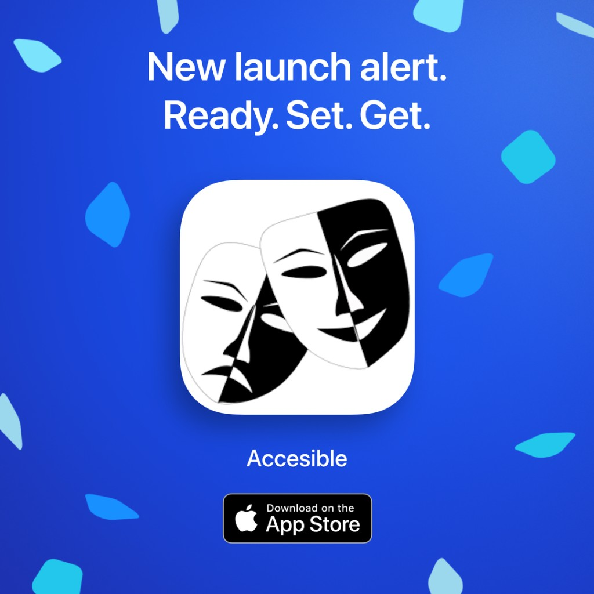

Accesible
App de accesibilidad en vivo para espectáculos con QLab.

Ya en la Mac App Store. 7 días gratis para nuevos suscriptores elegibles; condiciones completas al comprar.
Software especializado para automatización, accesibilidad y flujos técnicos en producciones en directo.
Herramientas pensadas para el flujo real de backstage con QLab, OSC, PJLink y mixers digitales.
App de accesibilidad en vivo para espectáculos con QLab.

Ya en la Mac App Store. 7 días gratis para nuevos suscriptores elegibles; condiciones completas al comprar.
Controla shutter y power de proyectores PJLink con botones o mediante OSC.

Ya en la App Store para Mac.
iPhone y Apple Watch: el modo PJ-LINK directo (TCP 4352) vale por sí solo. El reenvío OSC exige Shutter PJ-OSC en el Mac instalado, configurado y en marcha.

Ya en la App Store para iPhone, iPad y Apple Watch.
Traduce datos MIDI de Midas M32 / Behringer X32 a comandos OSC para control de show.

Ya en la Mac App Store (macOS). Beta TestFlight disponible.
App de ensayo para actores: da la replica con voz sintetica, graba tu propia voz y guarda sesiones para seguir tu evolucion.

Ya en la App Store y Google Play como StageWithMe. La beta de TestFlight sigue abierta para previsualizaciones.
Usa esta tabla para elegir la herramienta adecuada en cada tarea de producción.
Ver comparativaFlujos reales combinando proyección, accesibilidad y automatización de mixer.
Ver casos de usoEnlaces de documentación y recomendaciones prácticas de configuración.
Abrir recursos